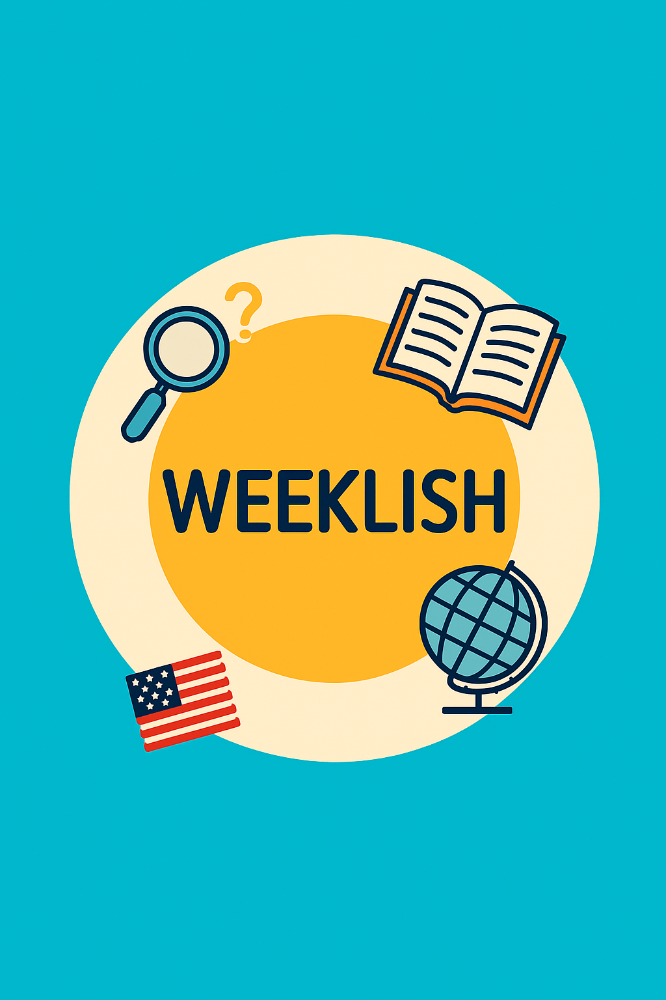

🎮 Games
Aprende inglés jugando con retos cortos de vocabulario.
Bienvenido a nuestra página para aprender inglés fácil 😄

Aprende inglés jugando con retos cortos de vocabulario.
Mira la lección y practica inglés a tu ritmo.
Usamos el presente simple para rutinas y hechos.
I study English every day. — Estudio inglés todos los días.
She studies English every day. — Ella estudia inglés todos los días.
Con he, she, it, normalmente añadimos -s al verbo.
Usamos el pasado simple para acciones terminadas. En preguntas y negativas usamos did y el verbo vuelve a su forma base.
We visited London last year. — Visitamos Londres el año pasado.
Did you see the museum? — ¿Viste el museo?
They didn’t take a taxi. — No tomaron un taxi.
Elige la opción que mejor expresa la deducción. Must = casi seguro; might/could = posible; can’t = casi imposible. Para deducir sobre el pasado, usa modal + have + participio.
Escucha cada audio y practica a tu ritmo.
Escucha cada frase y repítela en voz alta.
¡Buenos días! ¿Cómo estás?
¿Me da un vaso de agua, por favor?
¿Dónde está la estación de autobuses?
Escucha el audio e intenta repetir las frases.
Escucha con atención y repite intentando imitar la entonación.
Choose a level, read the text in English, and check your understanding.
Emma wakes up at eight on Saturday. She has eggs and toast for breakfast. Then she walks to the park with her brother. They see birds and play with a ball. In the afternoon, Emma visits her grandmother. They make a cake together.
When Daniel moved to the city, he didn’t know many people. His new job was busy, so he usually went home by train and cooked dinner. One Thursday, a coworker invited him to a photography club. Daniel almost said no because he was tired, but he decided to go. He met people who shared his interest, and soon the city began to feel more like home.
For years, the empty lot between two apartment buildings collected rubbish and rainwater. A few neighbours proposed turning it into a community garden. At first, some residents doubted the plan would last; everyone had different schedules, and the soil was in poor condition. The organisers divided the work into small tasks and asked a local nursery for advice. By the end of the season, the garden was producing tomatoes, herbs, and a surprising sense of community. The project did not solve every problem, but it gave residents a practical reason to work together.
Elige un tema para ver solo sus imágenes. Cambia de botón para ver otra categoría.
Lee cada situación y responde en inglés en voz alta. Abre “Ver ejemplo” cuando quieras comparar tu respuesta.
Puedes usar el micrófono predeterminado o detectar otros para elegir.
1. Quieres saber dónde está el baño.
“Excuse me, where is the restroom?”
Disculpe, ¿dónde está el baño?
2. Necesitas pedir ayuda en la calle.
“Could you help me, please?”
¿Podría ayudarme, por favor?
3. Quieres saber la hora.
“What time is it?”
¿Qué hora es?
4. Quieres preguntar cuánto cuesta algo.
“How much does this cost?”
¿Cuánto cuesta esto?
5. Quieres llegar a la estación.
“How can I get to the station?”
¿Cómo puedo llegar a la estación?
1. Saludas a alguien por la mañana.
“Good morning! How are you?”
¡Buenos días! ¿Cómo estás?
2. Saludas a un amigo.
“Hi! It’s nice to see you.”
¡Hola! Qué bueno verte.
3. Conoces a alguien por primera vez.
“Hello, my name is Ana. What’s your name?”
Hola, me llamo Ana. ¿Cómo te llamas?
4. Te preguntan cómo estás y te sientes muy bien.
“I’m great, thanks. How about you?”
Estoy muy bien, gracias. ¿Y tú?
5. Te despides después de una conversación.
“It was nice talking to you. See you later!”
Fue agradable hablar contigo. ¡Hasta luego!
1. Pides una mesa para dos.
“A table for two, please.”
Una mesa para dos, por favor.
2. Pides el menú.
“Could I see the menu, please?”
¿Podría ver el menú, por favor?
3. Ordenas una hamburguesa con queso.
“I’d like a cheeseburger, please.”
Quisiera una hamburguesa con queso, por favor.
4. Preguntas qué recomienda el restaurante.
“What do you recommend?”
¿Qué recomienda?
5. Terminaste de comer y pides la cuenta.
“Could I have the check, please?”
¿Me trae la cuenta, por favor?
1. Perdiste el tren. Pregunta cuándo sale el siguiente.
“I’ve just missed my train. Could you tell me when the next one leaves?”
Acabo de perder mi tren. ¿Podría decirme cuándo sale el siguiente?
2. Tu habitación de hotel aún no está lista. Pide una actualización con amabilidad.
“I’m checking in, but my room isn’t ready yet. Could you let me know how long it will take?”
Voy a registrarme, pero mi habitación aún no está lista. ¿Podría decirme cuánto tardará?
3. Tienes alergia a los cacahuates. Pregunta por los ingredientes.
“I’m allergic to peanuts. Could you check whether this dish contains any?”
Soy alérgico/a a los cacahuates. ¿Podría comprobar si este plato contiene alguno?
4. No entendiste una instrucción. Pide que la expliquen de otra manera.
“I’m not sure I understood the instructions. Could you explain them another way?”
No estoy seguro/a de haber entendido las instrucciones. ¿Podría explicarlas de otra manera?
5. Das tu opinión y reconoces otra perspectiva.
“I see your point, but I think we should consider another option.”
Entiendo tu punto, pero creo que deberíamos considerar otra opción.
Choose the correct meaning. Elige la traducción correcta.
Example sentence